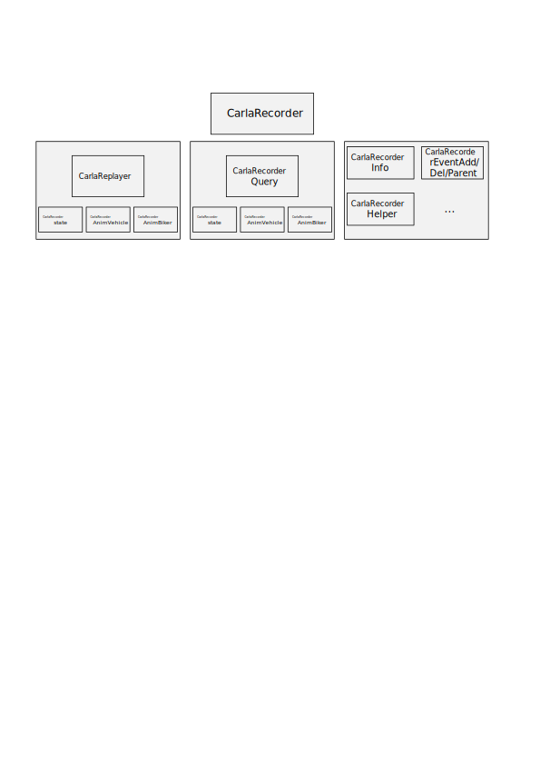

CARLA Recorder 模块说明文档
本文档详细介绍了 CARLA 模拟器中 CarlaRecorder 模块的主要功能、核心类与方法定义及其模块间依赖关系，旨在帮助开发者理解其录像与回放机制，并把握模块层次结构。
📑 目录
模块概述
CarlaRecorder 模块主要负责 CARLA 中仿真数据的录制与回放操作。包括对车辆、行人、光照、碰撞等实体状态的记录、存储与回放控制。其实现涉及数据包编码、查询分析、时间控制等多个子模块。
主要类与职责
| 类名 | 文件 | 说明 |
|---|---|---|
ACarlaRecorder |
CarlaRecorder.h / CarlaRecorder.cpp |
主要控制类，继承自 Unreal 的 AActor，提供录像/回放接口。 |
CarlaReplayer |
CarlaReplayer.h |
实现回放控制，包括时间倍率、忽略特定角色等设置。 |
CarlaRecorderQuery |
CarlaRecorderQuery.h |
用于分析已录制文件的数据，如碰撞信息、阻塞信息等。 |
功能说明
初始化
ACarlaRecorder::ACarlaRecorder()
- 设置 TickGroup 为
TG_PrePhysics - 默认禁用录像功能
录像控制
void Enable()
void Disable()
void Ticking(float DeltaSeconds)
Ticking()方法被定期调用以采集仿真状态- 使用
PlatformTime与VisualTime跟踪物理时间与视觉时间 - 与
CarlaEpisode和FActorRegistry联动获取仿真环境信息
回放控制
std::string ReplayFile(std::string Name, double TimeStart, double Duration, uint32_t FollowId, bool ReplaySensors)
void SetReplayerTimeFactor(double TimeFactor)
void SetReplayerIgnoreHero(bool IgnoreHero)
void SetReplayerIgnoreSpectator(bool IgnoreSpectator)
void StopReplayer(bool KeepActors)
- 通过
ReplayFile()加载文件并控制回放参数 - 支持设置时间倍率与忽略特定角色
StopReplayer()控制是否保留回放后生成的角色对象
查询功能
std::string ShowFileInfo(std::string Name, bool bShowAll)
std::string ShowFileCollisions(std::string Name, char Type1, char Type2)
std::string ShowFileActorsBlocked(std::string Name, double MinTime, double MinDistance)
QueryInfo()：查看录制文件的基础信息QueryCollisions()：查询特定对象类型之间的碰撞事件QueryBlocked()：查找因距离/时间被阻挡的实体
关键数据结构
| 结构体 | 描述 |
|---|---|
CarlaRecorderPlatformTime |
记录平台物理时间信息，用于时间对齐 |
CarlaRecorderVisualTime |
存储视觉时间戳，与画面帧同步 |
CarlaRecorderPacketId |
枚举各类数据包标识，如 FrameStart、Collision、EventAdd 等 |
依赖模块与层级流程
模块依赖流程图

各级说明
-
ACarlaRecorder（顶层控制器） 提供录像和回放的主要接口，是模块的入口类。它控制 Replayer 和 Query 子模块的使用。
-
CarlaReplayer（回放控制器） 管理回放过程，控制时间倍率、跟踪 ID、忽略设置等，依赖多个状态与动画模块：
-
CarlaRecorderState：保存每一帧的对象状态信息
- CarlaRecorderAnimVehicle：记录车辆动画数据（速度、油门、转向等）
-
CarlaRecorderAnimBiker：记录骑行者动画数据
-
CarlaRecorderQuery（数据查询器） 用于从录制文件中分析碰撞、阻塞等行为，依赖：
-
CarlaRecorderCollision：存储碰撞事件
- CarlaRecorderWalkerBones：记录行人骨骼信息
-
CarlaRecorderAnimBiker：查询骑行者动画行为
-
CarlaRecorderInfo / Event 系列
-
CarlaRecorderInfo：包含帧开始、结束、平台时间等全局信息 -
EventAdd/EventDel/EventParent：记录实体的创建、销毁与父子关系 -
CarlaRecorderHelper 提供通用辅助函数，如读取头信息、数据解码、ID 映射等
附录：包结构
Carla/
├── Source/
│ └── Carla/
│ └── Recorder/
│ ├── CarlaRecorder.cpp
│ ├── CarlaRecorder.h
│ ├── CarlaRecorderQuery.h
│ ├── CarlaRecorder[模块].h (多个)
│ └── CarlaReplayer.h
🔄 附加模块：CarlaRecorderAnimBiker
该模块用于记录骑行者（骑车人）的动画数据，是 Recorder 系统中专门处理骑行者运动状态的子模块。
主要结构体与类
| 名称 | 类型 | 说明 |
|---|---|---|
CarlaRecorderAnimBiker |
struct |
表示单个骑行者的动画状态记录，包含速度、引擎转速等属性 |
CarlaRecorderAnimBikers |
class |
管理多个骑行者动画记录集合，支持批量读写与清空操作 |
核心方法说明
CarlaRecorderAnimBiker
-
void Write(std::ostream &OutFile) const将DatabaseId、ForwardSpeed、EngineRotation写入输出流 -
void Read(std::istream &InFile)从输入流读取上述属性以恢复对象状态
CarlaRecorderAnimBikers
-
void Add(const CarlaRecorderAnimBiker &Biker)添加单个动画记录项到内部容器 -
void Clear()清空所有骑行者记录 -
void Write(std::ostream &OutFile) const写入数据包头、记录数量及所有骑行者对象数据到输出流 -
void Read(std::istream &InFile)从输入流批量读取骑行者记录数据 -
const std::vector<CarlaRecorderAnimBiker>& GetBikers()提供访问骑行者记录集合的只读引用
数据格式规范
该模块使用的数据包类型标识为 CarlaRecorderPacketId::AnimBiker，在录制/回放过程中可通过该标识对包类型进行分类处理。